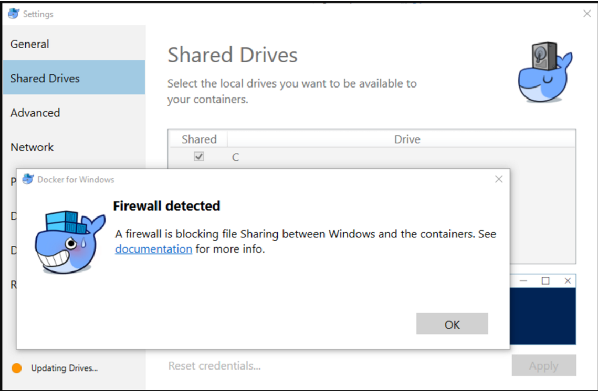
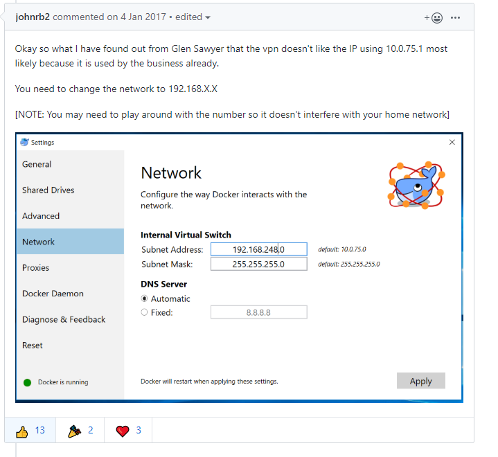

最近使用 Cisco VPN 在家工作，发现 Docker 共享磁盘（share drive） 的功能不工作，总是提示Firewall detected的错误。google 到了这是个通用的问题： https://github.com/docker/for-win/issues/360 。问题的根源是，Windows 的 Docker 使用 Samba 服务在 Host 和 Container 之间共享文件夹。由于 VPN router 的问题导致 SMB 服务失效。

获赞最多的一个解决方案是，重新设置 Docker 的网络，笔者测试使用此方法后，Firewall detected 的错误没有了，但是挂载的目录中的文件都是空的。

最终的解决服务是，使用最新版本的 Docker for Windows ，目前（2020-02-03）最新版本是： Docker Desktop Edge 2.1.7.0 ： https://docs.docker.com/docker-for-windows/edge-release-notes/#docker-desktop-community-2170